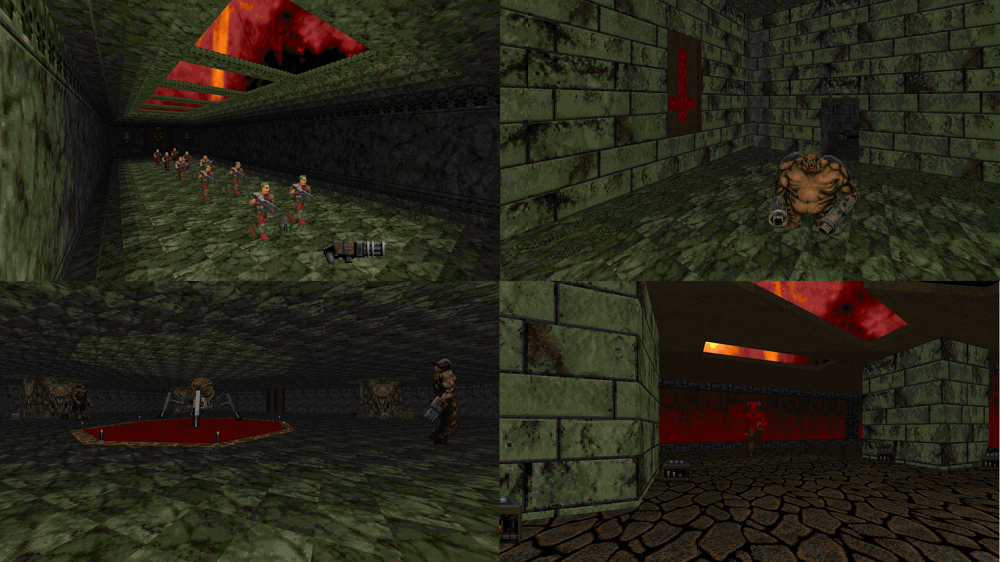

DOWNLOAD LINKS



| Year | 2012 |
| IWAD | Doom II |
| Source port | ZDoom |
| Game mode(s) | Single-player |
| Map(s) | MAP01-05 |
I Wanna Be The Hell Veteran, or IWBTHV for short, follows closely in the footsteps of Stana Prkle in the sense that the gameplay is intentionally difficult. Almost unfair at times even, I dare say. The wad consists of 5 maps, each housing what I can only describe as a near-slaughtermap-level amount of demons in one room. It also features an original soundtrack, composed by none other than Yours Truly.
| Year | 2014 |
| IWAD | Doom II |
| Source port | ZDoom/Zandronum |
| Game mode(s) | Single-player, coop |
| Map(s) | MAP01-05 |
IWBTHV: Coop Edition is a coop-compatible version of the original IWBTHV. Fun fact: the Coop Edition was originally going to have an extra map chiefly intended for coop play, but I scrapped the idea for unknown reasons.